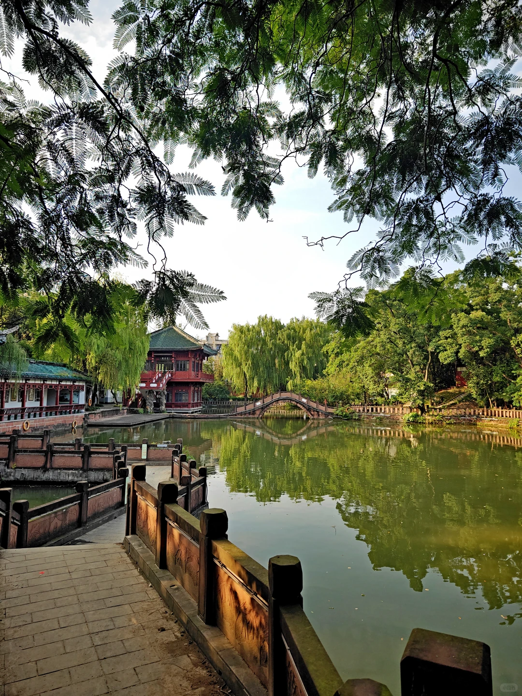
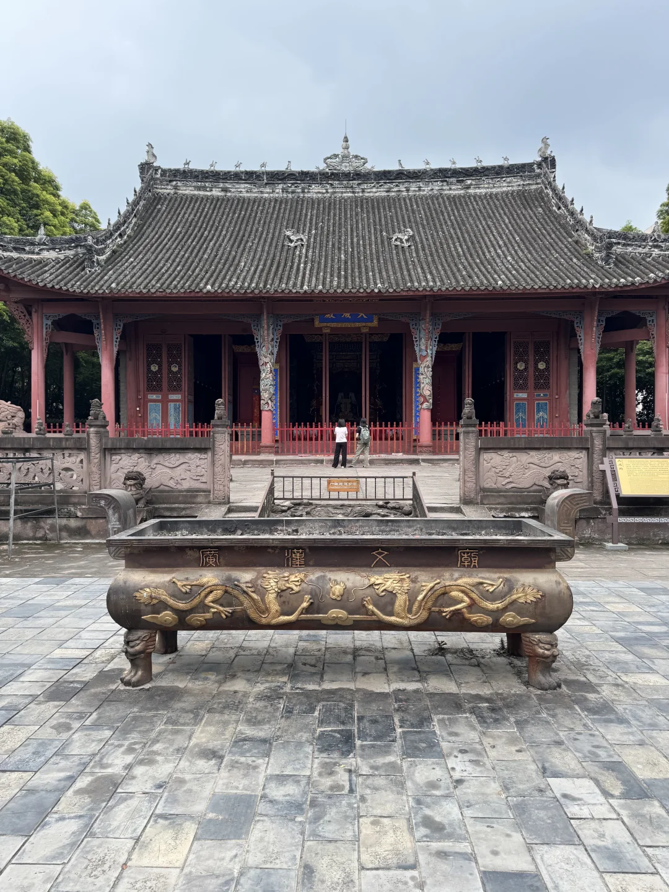
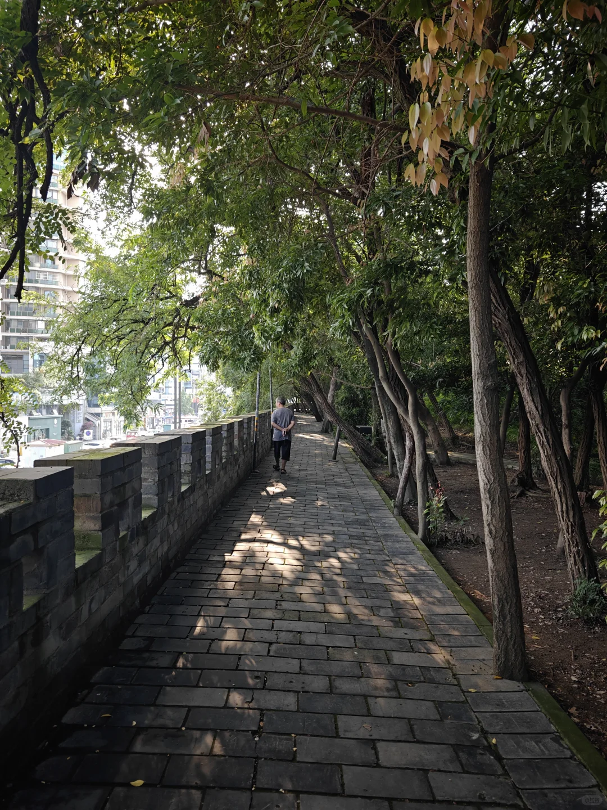

湖池与琯园
亭台、水面、古木与廊阁保留了城市园林的舒缓节奏。

房湖因唐代房琯任汉州刺史时开凿的湖池得名。历代文人曾在此游历，今天的公园把湖池园林、文庙、碑刻和雒城遗址叠合在一条步行线上。
这里适合慢走，而不是逐项打卡。先以水面和古木建立空间感，再进入文庙及碑刻区域，最后根据现场开放情况走到雒城城墙。
亭台、水面、古木与廊阁保留了城市园林的舒缓节奏。
石牌坊、雕刻与大成殿共同呈现川西文庙建筑细节。
碑刻和敬字惜纸传统，是理解地方文化的两条旁线。
汉代城墙和铭文砖让房湖不只是一座公园。

先以水面、树木和亭阁辨认园林的开合。

从园林转向红墙、屋檐与院落的建筑秩序。

依现场开放导向沿步道接近城墙，不进入围挡区域。
园内文物区域可能因修缮临时围挡；保保节等活动日期以当年公告为准。 本页不提供实时客流、班次或余票承诺。